1과목: 기계열역학
1. 다음 중 경로 함수(path function)인 것은 어느 것인가?
2. 이상기체의 엔탈피와 내부에너지에 대한 설명으로 적절한 것은?
3. 다음 중 증기압축식 냉동기에서 일반적으로 사용되지 않는 것은?
4. 중력가속도가 9.8m/s2 일 때 250kg의 물체가 200m의 높이로부터 땅으로 떨어질 경우 일을 열량으로 환산하면 약 몇 KJ인가?
5. 87℃의 물 1kg과 27℃의 물 1kg이 열의 손실 없이 직접 혼합될 때 생기는 엔트로피의 차로서 가장 적절한 것은? (단, 물의 비열은 4.18kJ/kg·K로 한다)
6. 이상기체의 비열에 대한 설명이다. 적절한 것은?
7. 실린더의 내경이 6.8cm, 행정이 8cm인 가솔린기관의 평균유효압력이 1200kPa일 때 이 기관의 1행정당 출력[kJ]으로 적절한 것은?
8. 실린더 내의 공기가 3kg 있다. 공기가 200kPa, 10℃인 상태에서 600kPa이 될때까지 ′PV1.3=일정′인 과정으로 압축된다. 이 과정에서 공기가 한 일은 약 몇kJ인가? (단, 공기의 기체상수 R은 0.287kJ/kg·K이다)
9. 공기 5kg을 압력이 일정한 상태에서 0℃에서 100℃까지 가열하고자 한다. 이때 필요한 열량[kJ]으로 적절한 것은? (단, 공기의 정압비열 CP(kJ/kg℃)=1.01+0.000079t(℃)이다.)
10. 10℃에서 160℃까지의 공기의 평균 정적비열이 0.7315kJ/kg·℃이다. 이 온도 변화에서 공기 1kg의 내부에너지 변화로 적절한 것은?
11. 실린더(cylinder)내의 유체가 주위에 36kJ/kg의 열을 방출하고, 68kJ/kg의 일을 받았다. 이 때 내부에너지의 변화로 적절한 것은?
12. 수은주에 의해 측정된 대기압이 753mmHg일 때 진공도 90%의 절대 압력으로 적절한 것은? (단, 중력가속도는 9.8m/s2, 수은의 밀도는 13600kg/m3이다.)
13. 시간당 380ton의 물을 공급하여 수증기를 생산하는 보일러가 있다. 이 보일러에 공급하는 물의 엔탈피는 830kJ/kg이고, 생산되는 수증기의 엔탈피가 3230kJ/kg이라고 할 때, 발열량이 32000kJ/kg인 석탄을 시간당 34ton 씩 보일러에 공급한다면 이 보일러의 효율로 적절한 것은?
14. 증기압축 냉동장치에서 증발기를 지나는 냉매의 물리적 변화로서 적절한 것은? (단, 냉동장치는 이상적인 냉동사이클을 따른다)
15. 물 2kg을 30℃에서 80℃까지 가열하였다. 이 과정 동안의 엔트로피 변화량으로 적절한 것은? (단, 물의 비열은 4.184kJ/kg· K로 일정하다.)
16. 다음 중 열병합발전시스템에 대한 설명으로 적절한 것은?
17. 다음 중 가장 큰 에너지를 나타내는 것은?
18. 카르노(Carnot) 열기관에 있어서 공급열량을 Q1, 방열량을 Q2로 할 때, 열효율[η]을 나타내는 식으로 적절한 것은?
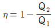
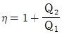
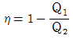
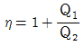
19. 완전히 단열된 실린더 안의 공기가 피스톤을 밀어 외부로 일을 하였을 때 일의 양으로 적합한 것은? (단, 절대량을 기준으로 한다)
20. 증기압축 냉동사이클(과열과 과냉이 없음)에서 응축온도가 일정할 때 증발온도가 높을수록 성능계수는 어떻게 되는가?
2과목: 냉동공학
21. 다음 중 압축방식에 의한 압축기의 분류에 속하지 않는 것은?
22. 어떤 냉동실의 온도를 -5℃로 유지하기 위하여 매시간당 150000kcal의 열량을 제거해야 한다. 이 제거열량을 냉동기로 제거한다면 이 냉동기의 소요마력은 약 얼마인가? (단, 냉동기의 방열온도는 10℃, 1HP=632kcal/h로 한다)
23. 다음은 냉동기에 관한 설명이다. 가장 적절한 것은 어느 것인가?
24. 냉동사이클의 응축열량에 대한 설명이다. 적절하지 못한 것은 어느 것인가?
25. 냉동기에 사용되고 있는 냉매로 대기압에서 비등점이 가장 낮은 냉매는 다음중 어느 것인가?
26. 가역 카르노사이클에서 고온부 30℃, 저온부 -10℃로 운전되는 열기관의 효율은 약 얼마인가?
27. 냉각수 입구온도 16℃, 냉각수 출구온도 24℃, 냉각수량 200ℓ/min, 응축기의 냉각면적 20m2, 응축기의 열통과율 800kcal/m2h℃ 의 조건으로 작동되는 냉동장치의 수냉식 응축기에서 냉매와 냉각수의 산술평균온도차는?
28. 냉매가 누설되거나 냉매충전량이 부족시 발생할 수 있는 현상으로 적절하지 못한 것은?
29. 다음은 만액식 증발기에 대한 설명이다. 적절하지 못한 것은?
30. 냉동장치의 불응축가스를 제거하는 가스퍼저(gas purger)의 위치로 적절한 곳은 다음 중 어느 곳 인가?
31. 다음은 냉동장치의 윤활 목적을 나타낸 것이다. 적절하지 못한 것은?
32. 냉동장치에서 증발온도를 일정하게 유지하고 응축온도를 높일 때 일어나는 현상을 나타낸 것으로 적절한 것은?
33. 안정적으로 작동되는 냉동시스템에서 팽창밸브를 과도하게 닫았을 때 일어나는 현상으로 적절하지 못한 것은?
34. 일반 냉동장치의 팽창밸브의 작용에 대한 설명으로 적절한 것은 다음 중 어느 것인가?
35. 다음은 냉매배관의 토출관경을 결정시 주의사항이다. 적절하지 못한 것은?
36. 실린더 직경 80mm, 행정 50mm, 실린더의 수 6개, 회전수 1750rpm인 왕복동식 압축기의 피스톤 압출량은 약 몇 m3/h인가?
37. 냉동장치의 냉매의 엔탈피가 압축기 입구 150kcal/kg, 압축기 출구 166kcal/kg, 팽창밸브 입구에서 110kcal/kg 인 경우 이 냉동장치의 성적계수는?
38. 외기온도가 30℃이며 냉장고의 실온이 -5℃, 냉장고 벽의 열통과율이 0.32kcal/m2h℃, 냉장고 벽면적이 700m2 일 때 이 냉장고 벽을 통한 침입열량은 약 몇 kcal/h인가? (단, 열손실은 무시한다.)
39. 열의 종류에 대한 설명이다. 가장 적절하게 설명한 것은?
40. 윤활유가 유동하는 최저온도인 유동점은 응고온도보다 몇 도 정도 높은가?
3과목: 공기조화
41. 다음 중 일반 공기 냉각용 냉수코일에 가장 많이 적용되는 코일의 열수로서 적절한 것은?
42. 다음 중 습공기의 상태변화에 대한 설명으로 적절하지 못한 것은?
43. 다음은 공기조화 부하를 나타낸 것이다. 잠열부하를 포함한 것은?
44. 다음 중 습공기선도(T-x선도)상에서 알수 없는 것은?
45. 다음 중 인체에 해가 되지 않는 탄산가스(CO2)의 실내 한계 오염농도는?
46. 덕트내 풍속을 측정하는 피토관(pitot tube)을 이용하여 전압 23.8mmAq, 정압 10mmAq를 측정하였다. 이 경우 덕트내의 풍속으로 적절한 것은?
47. 다음은 습공기의 습도 표시 방법을 설명한 것이다. 적절하지 못한 것은?
48. 공기조화설비의 구성에서 각종 설비별 기기로써 적절하게 짝지어진 것은?
49. 다음의 설명 중 복사 냉난방방식(panelair system)에 대한 설명으로 적절하지 못한 것은?
50. 공조방식에 관한 다음의 설명 중 가변풍량 덕트방식에 관한 설명으로 적절하지 못한 것은?
51. 6인용 입원실이 100실인 병원의 입원실 전체 환기를 위한 최소 신선 공기량으로 적절한 것은? (단, 외기 중 CO2함유량은 0.0003m3/m3, 실내 CO2의 허용농도는 0.1%, 재실자 1인당의 CO2발생량은 0.015m3/h이다)
52. 냉각코일의 장치노점온도(ADP)가 7℃이고, 여기를 통과하는 입구공기의 온도 27℃라 한다. 코일의 바이패스 팩터를 0.1이라고 할 때 코일 출구공기의 온도는?
53. 다음은 공기조화에 대하여 설명한 것이다. 적절하지 못한 것은?
54. 노통 보일러는 지름이 큰 원통형 보일러동(shell)에 큰 노통을 설치한 것으로서 노통이 2개 있는 보일러는 어느 것인가?
55. 다음은 내연식 보일러의 특징을 설명한 것이다. 적절하지 못한 것은?
56. 다음 중 증기난방의 설명으로 적절한 것은?
57. 각종 공기조화방식 중에서 개별방식의 특징으로 적절한 것은?
58. 각 난방방식에 의한 일반적인 실내 상하의 온도분포를 나타낸 그림에서 이 중 바닥복사난방방식에 의한 것은 어느 것인가?
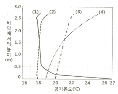
59. 다음의 각종 기기 중 온수난방 설비용기기가 아닌 것은?
60. 다음 중 보일러의 정격부하를 나타낸 것으로 적절한 것은?
4과목: 전기제어공학
61. 입력단자 A, B 중 모두 “OFF” 되어야 출력이 “ON” 되고, 그 중 어느 한 단자라도 “ON” 되면 출력이 “OFF“ 되는 회로는?
62. 그림에 해당하는 함수를 라플라스 변환한 것으로 적절한 것은?
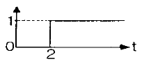
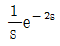
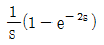
63. 입력으로 단위 계단함수 u(t)를 가했을때, 출력이 그림과 같은 조절계의 기본 동작은?
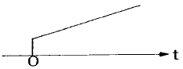
64. 컴퓨터실의 온도를 항상 18℃로 유지하기 위하여 자동냉난방기를 설치하였다. 이 자동 냉난방기의 제어는?
65. 다음은 피드백 제어시스템의 피드백 효과를 나타낸 것이다. 적절하지 못한 것은?
66. 전기자철심을 규소 강판으로 성층하는 주된 이유로 적절한 것은?
67. 200V, 300W의 전열선의 길이를 1/3로 하여 200V의 전압을 인가하면 이 때의 소비전력은 몇 W인가?
68. 다음 중 직류 전동기의 규약효율을 구하는 식으로 적절한 것은?
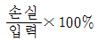
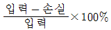
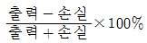
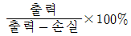
69. 전기 단위 중 kVA는 다음 중 무엇을 나타내는 단위인가?
70. 다음의 제어방식 중 무인 엘리베이터의 자동제어로 가장 적합한 제어방식은?
71. 3상 유도전동기의 출력이 5kW, 전압 200V, 효율 90%, 역률이 80%일 때 이 전동기에 유입되는 선전류는 약 몇 A인가?
72. 논리식
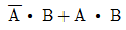
와 같은 것은?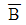
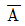
73. 다음 중 프로세스제어에 속하는 제어량으로 적절한 것은?
74. 다음의 브리지 중 예비전원으로 사용되는 축전지의 내부 저항을 측정할 때 가장 적절한 것은?
75. 다음은 서보 전동기의 특징을 설명한 것이다. 적절하지 못한 것은?
76. 실리콘 제어정류기(SCR)는 다음 중 어떤 형태의 반도체인가?
77. 그림과 같이 직류 전력을 측정하였다. 가장 정확하게 측정한 전력은? (단, Ri : 전류계의 내부저항, Re : 전압계의 내부저항이다.)
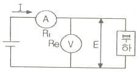
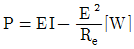
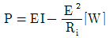
78. 신호흐름도와 등가인 블록선도를 그리려고 한다. 이 때 G(s)로 알맞은 것은?
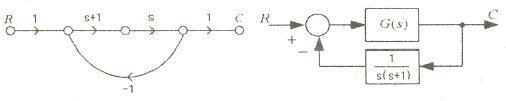
79. 직류자 전동기를 전기자 전류 100A, 단자전압 200V, 회전속도 1200rpm으로 운전하고 있다. 전기자 회로의 저항이 0.2Ω일 때 역기전력은 몇 V인가?
80. 평행한 두 도체에 같은 방향의 전류를 흘렸을 때 두 도체 사이에 작용하는 힘에 대한 설명으로 적절한 것은?
5과목: 배관일반
81. 펌프의 양수량 60m3/min, 전양정 20m일 때, 펌프의 효율이 60%인 벌류트펌프(volute pump)로 구동할 경우 필요한 동력은 약 kW인가?
82. 다음 중 저압 가스관에 의한 가스 수송에 있어서 압력손실과 관계가 가장 먼 것은?
83. 다음은 냉동설비배관에 있어서 액분리기와 압축기 사이의 냉매배관을 할 때의 구배를 나타낸 것이다. 가장 적절한 것은?
84. 다음은 수배관을 할 경우의 부식방지를 위한 방법이다. 적절하지 못한 것은?
85. 다음은 지역난방의 특징을 설명한 것이다. 적절하지 못한 것은?
86. 가스 사용시설의 건축물내의 매설배관으로 적절하지 못한 배관은?
87. 다음은 공기조화설비 중 복사난방의 패널형식을 나나낸 것이다. 해당되지 않는 것은?
88. A와 B의 배관접속에 있어서 용접 시공시의 용접부위 결함을 도시한 것이다. 무슨 결함인가?
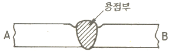
89. 다음은 온수난방설비의 온수배관 시공법을 설명한 것이다. 적절하지 못한 것은?
90. 다음 중 증기난방을 응축수환수법에 의하여 분류 시 적절하지 못한 것은?
91. 동관의 이음 방법으로서 지름 20mm이하의 동관을 이음하거나 기계의 점검, 보수, 기타 관을 분리하기 쉽게 하기 위한 이음방법을 나타낸 것은?
92. 다음은 배수 및 통기설비의 배관시공에 대한 주의 사항을 나타낸 것이다. 적절 하지 못한 것은?(오류 신고가 접수된 문제입니다. 반드시 정답과 해설을 확인하시기 바랍니다.)
93. 다음 중 배수단위가 가장 큰 위생기구는?
94. 다음의 밸브 중 냉동장치의 액순환펌프의 토출측 배관에 설치되어 역류를 방지하기 위한 밸브는?
95. 다음은 급탕배관의 시공에 대한 주의사항이다. 적절하지 못한 것은?(오류 신고가 접수된 문제입니다. 반드시 정답과 해설을 확인하시기 바랍니다.)
96. 통기관 시공시 배수 횡지관에서 통기관을 이어낼 때의 경사도는 얼마 이내로 하는 것이 적절한가? (단, 수직이음인 경우 제외한다)
97. 다음의 덕트기구 중 공기의 흐름방향을 조절할 수 있으나 풍량은 조절할 수 없고 주로 환기용 흡입구나 배기구로 사용되는 것은?
98. 다음은 증기난방용 트랩을 나타낸 것이다. 증기와 응축수의 온도 차이를 이용하여 응축수를 배출하는 트랩은?
99. 다음 식은 저압가스 배관의 통과 유량을 구하는 공식이다. 공식 중의 L은 관의 길이(m)를 나타낸다. S가 나타내는 것은 다음 중 어느 것인가?
100. 다음 사무소 건물에서의 필요한 급수량은? (단, 건물의 연건평 30000m2, 건물의 유효면적 비율 60%, 건물의 유효면적당 거주인원 0.2인/m2, 1인 1일당 사용 급수량 100lit이다)